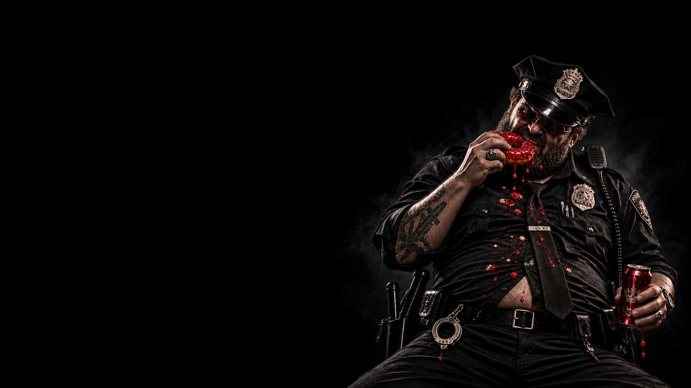

МИРНЫЕ · ПРОВЕРЯЮЩАЯ
КОП
ОН ЗНАЕТ БОЛЬШЕ,
ЧЕМ ДОЛЖЕН.
Мирные
Активная · Проверяющая
Проверка — каждую ночь Коп выбирает одного игрока и узнаёт у ведущего, относится ли тот к Мафии или Мирным.
Главный источник скрытой информации на стороне мирных. Каждую ночь Коп проверяет одного игрока и получает от ведущего ответ: «Мафия» или «Мирный». Его задача — вычислить Мафию и использовать полученную информацию так, чтобы не раскрыть себя раньше времени.
Коп не может вычислить Психа. Если Коп проверяет Психа, ведущий показывает, что этот игрок — Мирный. Поэтому даже успешная проверка не всегда означает, что игрок безопасен.
Не выдавай себя после первой же проверки. Запоминай результаты, наблюдай за поведением игроков и передавай информацию столу осторожно. Чем дольше Мафия не знает, кто Коп, тем больше проверок ты успеешь сделать.